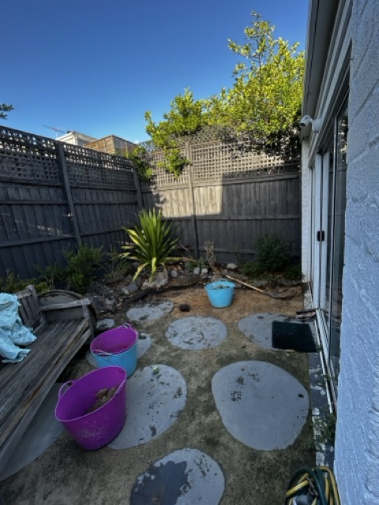
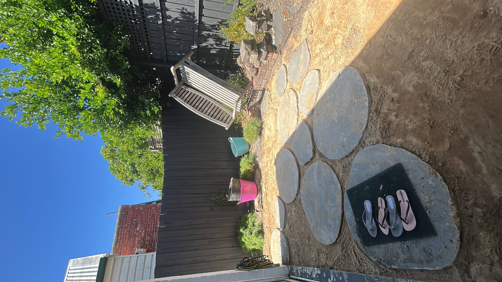

Report #001
Nicholson • South Yarra, VIC • 23 Feb 2026
Baseline
Demolition
Water function
Wayfinding
Site setup
🧭 Installation commenced
Site setup and baseline capture. Primary works included breaking up and removing non-permeable surfaces, establishing the base layer, repositioning steppers for improved navigation and aesthetic alignment, and clearing demolition materials from site.




Work log
- • Broke up and removed non-permeable surfaces.
- • Established breathable base layer for infiltration and staged build.
- • Repositioned steppers for improved navigation, aesthetic clarity, and compaction control.
- • Completed tip run — demolition materials removed from ecological system.
- • Site staged for next structural and planting phase.
Why this matters
- • Removing impermeable surfaces restores soil-water exchange.
- • Base layers determine long-term oxygen flow and root viability.
- • Steppers guide human movement — reducing unintended compaction.
- • Baseline imagery anchors future trajectory measurement.
- • Clear material ledger strengthens verification and circularity signals.
Immediate next steps
- • Confirm final levels and water direction.
- • Install refuge structure before soil cover.
- • Photograph next stage prior to concealment.